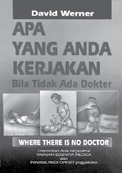

Published by:
Hesperian Health Guides
1919 Addison St., #304
Berkeley, California 94704 • USA health guides hesperian@hesperian.org • www.hesperian.org
THIS REVISED EDITION
Copyright © 1977, 1992, 2013 by Hesperian
CAN BE IMPROVED WITH
First English edition: October 1977
YOUR HELP.
Revised English edition: May 1992
If you are a community
Thirteenth printing: May 2013 health worker, doctor,
ISBN: 978-0-942364-15-6
mother, or anyone with ideas
The original English version of this book was produced in or suggestions for ways this
1977 as a revised translation of the Spanish edition, Donde book could be changed no hay doctor.
to better meet the needs
Hesperian encourages you to copy, reproduce, or adapt of your community, please any or all parts of this book, including the illustrations, write to Hesperian at the provided that you do this for non-commercial purposes, credit above address. Thank you
Hesperian, and follow the other requirements of Hesperian’s for your help.
Open Copyright License (see www.hesperian.org/about/ open-copyright).
This book has been printed
For certain kinds of adaptation and distribution, we ask in the USA by Quad that you first obtain permission from Hesperian. Contact
Graphics on 100% postpermissions@hesperian.org to use any part of this book consumer, chlorine-free, for commercial purposes; in quantities more than 100 print recycled paper.
copies; in any digital format; or with an organizational budget more than US$1 million.
We also ask that you contact Hesperian for permission before
100% beginning any translation, to avoid duplication of efforts, and for suggestions about adapting the information in this book. Please send Hesperian a copy of any materials in which text or illustrations from this book have been used.
Library of Congress Cataloging-in-Publication Data
The Library of Congress has already cataloged the 10-digit ISBN as follows:
Werner, David, 1934Where there is no doctor: a village health care handbook by David Werner; with Carol Thuman and Jane Maxwell-Rev. ed.
Includes Index.
ISBN 0-942364-15-5
1. Medicine, Popular. 2. Rural health. I. Thuman, Carol,
1959-. II. Maxwell, Jane, 1941-. III Title.
[DNLM: 1. Community Health Aides-handbooks. 2. Medicine-popular works.
3. Rural Health-handbooks. WA 39 W492W]
RC81.W4813 1992 610-dc20
DNLM/DLC
92-1539



Thanks to the work and dedication of many groups and individuals around
the world, Where There Is No Doctor
has been translated into more than 80 languages. The following are some of the translations and the addresses where you can obtain them.
SPANISH and ENGLISH editions are available from:
Hesperian Health Guides
1919 Addison St., #304 • Berkeley, California 94704 • USA www.hesperian.org • bookorders@hesperian.org tel: (1-510) 845-4507 • fax: (1-510) 845-0539
ARABIC:
PORTUGUESE:
Arab Resource Collective
Teaching Aids at Low Cost (TALC)
Lion St.
P.O. Box 49
Dkik Bldg., 4th floor
St. Albans, Herts. AL15TX
Beirut, LEBANON
UNITED KINGDOM
www.mawared.org www.talcuk.org
BENGALI:
SWAHILI:
Gonoshasthaya Kendra (GK)
Vinay Choudary, Spice Net Tanzania
P.O. Nayarhat Via Dhamrai
PO Box 14508
House #14/E, Road #6,
16th Floor, PPF Towers
Dhanmondi, Dhaka 1205
Ohio Street, Dar es Salaam
BANGLADESH
TANZANIA
www.gkbd.org vinay@spicenet.co.tz
HAITIAN KREYÒL:
TAMIL:
4 The World Resource Distributors
Adaiyaalam Publishing Group
1951 E. Florida
1205/1 Karupur Salai
Springfield, MO 65803
Thiruchirappali District
UNITED STATES
Puthanatham, Tamil Nadu, 621310, INDIA www.4WRD.org
KHMER:
URDU:
OUM Bunnary Distribution
Pakistan Forum on Women’s Health
Siem Reap
PMA House, Aga Khan III Road
CAMBODIA
Garden West, Karachi 74400 http://wtind-khmer.blogspot.com
PAKISTAN
Please write to Hesperian or look on our website, for other editions including Albanian,
Amharic, Arabic, Aymara, Azeri, Bengali, Burmese, Cebuano, Chichewa, Chinese, Creole,
Dari, Farsi, Filipino, French, Fulfulde, German, Hindi, Iban, Ibatan, Ilocano, Ilongo, Indonesian,
Italian, Japanese, Jinghpaw, Kannada, Karakalpak, Kazakh, Khmer, Kirundi, Korean,
Kwangali, Kyrgyz, Lao, Malayalam, Marathi, Miskito, Mongolian, Nepali, Oriya, Oshivambo,
Pashto, Pidgin, Portuguese, Quechua, Russian, Sepedi, Serbian, Shan, Shuar, Sindhi, Sinhala,
Somali, Swahili, Tamil, Telegu, Tetum, Thai, Tibetan, Tigrinya, Tswana, Turkish, Turkman,
Tzotzil, Urdu, Uzbek, Vietnamese, and Wolof, as well as other English editions adapted for specific countries.
We are looking for ways to get this book to those it can serve best. If you are able to help or have suggestions, please contact Hesperian.
THANKS
This revision of Where There Is No Doctor has been a cooperative effort. We thank the
many users of the book around the world who have written us over the years with comments and suggestions—these have guided us in updating this information.
David Werner is the author of the original Spanish and English versions of the book. His vision, caring, and commitment are present on every page. Carol Thuman and Jane Maxwell share credit for most of the research, writing, and preparation of this revised version. We are deeply grateful for their excellent and very careful work.
Thanks also to other researchers of this revised edition: Suellen Miller, Susan Klein, Ronnie
Lovich, Mary Ellen Guroy, Shelley Kahane, Paula Elster, and George Kent. For information from the
African edition, our thanks to Andrew Pearson and the other authors at Macmillan Publishers.
Many doctors and health care specialists from around the world generously reviewed portions of the book. We cannot list them all here, but the help of the following was exceptional: David
Sanders, Richard Laing, Bill Bower, Greg Troll, Deborah Bickel, Tom Frieden, Jane Zucker, David
Morley, Frank Catchpool, Lonny Shavelson, Rudolph Bock, Joseph Cook, Sadja Greenwood,
Victoria Sheffield, Sherry Hilaski, Pam Zinkin, Fernando Viteri, Jordan Tapero, Robert Gelber, Ted
Greiner, Stephen Gloyd, Barbara Mintzes, Rainer Arnhold, Michael Tan, Brian Linde, Davida Coady, and Alejandro de Avila. Their expert advice and help have been of great value.
We warmly thank the dedicated members of Hesperian for their help in preparing the manuscript:
Kyle Craven for computer graphic arts and layout, Stephen Babb and Cynthia Roat for computer graphics, and Lisa de Avila for editorial assistance. We are also grateful to many others who helped in this book’s preparation: Kathy Alberts, Mary Klein, Evan Winslow-Smith, Jane Bavelas, Kim
Gannon, Heidi Park, Laura Gibney, Nancy Ogaz, Martín Bustos, Karen Woodbury, and Trude Bock.
Our special thanks to Keith and Luella McFarland for being there when we needed them most.
For help updating this book, we thank Manisha Aryal, Elizabeth Babu, Kristen Cashmore,
Marcos Burgos, Lynne Coen, Gopal Dabade, Dan Eisenberg, Pam Fadem, George Feldman, Iñaki
Fernández de Retana, Shu Ping Guan, Sunil Kaul, Lisa Keller, Erika Leemann, Malcolm Lowe,
Malini Mahendra, Jane Maxwell, Susan McCallister, Gail McSweeney, Elena Metcalf, Carrie Milnes,
Syema Muzaffar, Leana Rosetti, Lora Santiago, David Scollard, C. Sienkiewicz, Maia Small, Peter
Small, Melissa Smith, Linda Spangler, Fred Strauss, Michael Terry, Leah Uberseder, Kathleen
Vickery, Lily Walkover, Sarah Wallis, and Curt Wands. Dorothy Tegeler coordinated this 2013 reprint with help from Kathy DeRemier, Virginia Feldman, Todd Jailer, Robert Kimsey, Dick Litwin,
Kathleen Tandy, and Fiona Thomson.
Artwork for this book was created by David Werner, Kyle Craven, Susan Klein, Regina FaulDoyle, Sandy Frank, Kathleen Tandy, Fiona Thomson, Lihua Wang, and Mary Ann Zapalac. We also thank the following persons and groups for permission to use their artwork: Dale Crosby, Carl
Werner, Macmillan Publishers (for some of Felicity Shepherd’s drawings in the African edition of this book), the “New Internationalist” (for the picture of the VIP latrine), James Ogwang (for the drawings on page 417), and McGraw-Hill (for drawings appearing on pages 85 and 104 taken from
Emergency Medical Guide by John Henderson, illustrated by Niel Hardy).
The fine work of those who helped create the original version is still reflected on nearly every page.
Our thanks to Val Price, Al Hotti, Kathleen Tandy, Max Capestany, Rudolf Bock, Kent Benedict, Alfonzo
Darricades, Carlos Felipe Soto Miller, Paul Quintana, David Morley, Bill Bower, Allison Orozco,
Susan Klein, Greg Troll, Carol Westburg, Lynn Gordon, Myra Polinger, Trude Bock, Roger Buch,
Lynne Coen, George Kent, Jack May, Oliver Bock, Bill Gonda, Ray Bleicher, and Jesús Manjárrez.
For this 1992 edition, we are grateful for financial support from the Carnegie Corporation,
Gladys and Merrill Muttart Foundation, Myra Polinger, the Public Welfare Foundation, Misereor, the
W.K. Kellogg Foundation, the Sunflower Foundation, and the Edna McConnell Clark Foundation.
For this 2009 printing, thanks to Flora Family Foundation, Ford Foundation, Grousebeck Family
Foundation, Moriah Fund, and West Foundation.
Finally, our warm thanks to the village health workers of Project Piaxtla in rural Mexico — especially Martín Reyes, Miguel Angel Manjárrez, Miguel Angel Alvarez, and Roberto Fajardo whose experience and commitment have provided the foundation for this book.